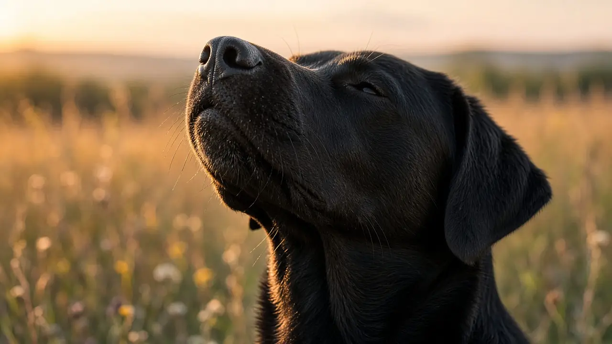

Can dogs smell fear? The evidence says they can pick up on it
Dogs cannot read your mind, but several experiments show they can detect changes in human body odour linked to fear and stress, even with no sight or sound of the person. In a 2022 study, trained dogs picked a stressed person's breath and sweat sample over the same person's calm sample in 93.75% of 720 trials. Other studies found that the smell of human fear sweat made dogs more stressed, and that stress odour made dogs more cautious in a decision task.

Dogs can tell stressed odour from calm odour
In 2022, Clara Wilson and colleagues collected breath and sweat samples from 36 people before and after a stressful mental arithmetic task, and checked that the task really raised stress using self reports and physiological measures. Four dogs trained to alert on the stress samples were then offered a choice of three pots: the person's stress sample, the same person's calm sample from before the task, and a blank. The dogs chose the stress sample with 90% to 96.88% accuracy, 93.75% across all 720 trials. Because the two samples came from the same person, the dogs must have been smelling a change linked to stress, not just who the person was.
Fear sweat changes how dogs behave
A 2018 study by Biagio D'Aniello and colleagues asked whether untrained pet dogs react to these smells. They collected armpit sweat from male donors under fear and happiness conditions, then exposed Labrador and Golden retrievers to fear sweat, happy sweat or a no-sweat control while their owner and a stranger were in the room. In the fear odour condition the dogs showed more stress behaviours and had higher heart rates than in the happy or control conditions. In the happy odour condition they approached and interacted with the stranger more and with their owner less.
Stress odour can make dogs more cautious
In 2024, Zoe Parr-Cortes and colleagues tested 18 dogs in a cognitive bias task, where dogs learn that a bowl in one spot has food and a bowl in another spot does not, then are shown bowls in ambiguous spots in between. With odour from unfamiliar stressed volunteers present, dogs were less likely to approach the ambiguous bowl closest to the unrewarded spot than with no odour. The authors read this as possible risk-reduction behaviour, a sign that human stress smell may nudge dogs toward a more pessimistic mood and affect how they learn.
What this means for owners
- "Smelling fear" is real, with limits. The studies show dogs can detect and react to odour changes from fear and stress. They do not show dogs understand the emotion the way a person would, and dogs also read your body language and voice.
- Your stress can rub off. If you are tense at the vet or during a tricky greeting, your dog may pick up on it. Slow breathing and calm handling help both of you. Watch for your dog's own stress signals such as lip licking, yawning or a tucked tail (see reading stress and why dogs yawn).
- Do not stare down or run from an unfamiliar dog to "hide" fear. Stand still, turn side on and let the dog lose interest. Never approach a dog that is growling or stiff.
- Training sessions: train when you are calm, and keep sessions short and positive (see reward based training).
Frequently asked questions
Can dogs really smell fear?
Experiments suggest they can detect odour changes linked to fear and stress. In a 2018 study, pet retrievers exposed to fear sweat showed more stress behaviours and higher heart rates than dogs exposed to happy sweat or no sweat.
How accurate are dogs at smelling human stress?
In a 2022 PLOS ONE study, four trained dogs picked a person's post-stress breath and sweat sample over the same person's calm sample with 93.75% accuracy across 720 trials.
Does my stress affect my dog?
It may. A 2024 Scientific Reports study found dogs exposed to the smell of stressed strangers were more cautious in an ambiguous food task, which the authors linked to a more pessimistic state. Dogs also respond to your voice and body language.
Should I hide my fear around a strange dog?
You cannot hide your smell, but calm behaviour matters most. Stand still, turn side on, avoid staring and do not run. Never approach a dog that is growling or stiff.
Sources
- Wilson C, Campbell K, Petzel Z, Reeve C (2022). Dogs can discriminate between human baseline and psychological stress condition odours. PLOS ONE 17(9): e0274143. DOI 10.1371/journal.pone.0274143, PLOS ONE (open access)
- D'Aniello B, Semin GR, Alterisio A, Aria M, Scandurra A (2018). Interspecies transmission of emotional information via chemosignals: from humans to dogs (Canis lupus familiaris). Animal Cognition 21(1): 67-78. DOI 10.1007/s10071-017-1139-x, Animal Cognition
- Parr-Cortes Z, Müller C, Talas L, Mendl M, Guest C, Rooney N (2024). The odour of an unfamiliar stressed or relaxed person affects dogs' responses to a cognitive bias test. Scientific Reports 14: 15843. DOI 10.1038/s41598-024-66147-1, Scientific Reports (open access)
General education only, not veterinary advice. If you are worried about your dog, contact your vet; in an emergency, contact an emergency vet straight away.